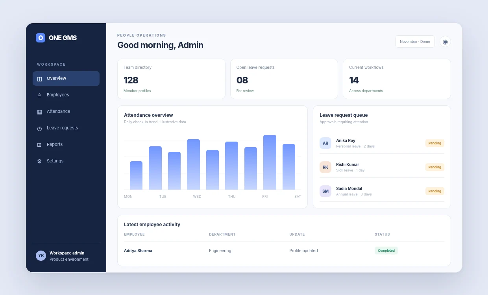
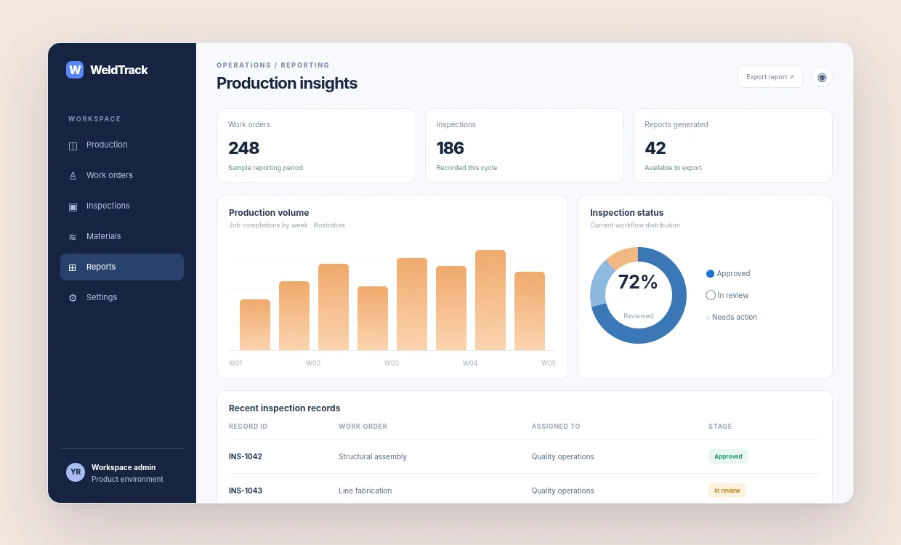
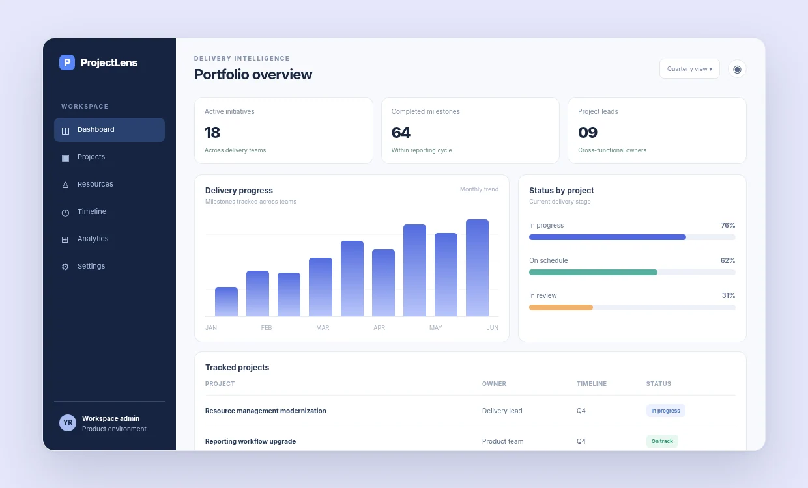
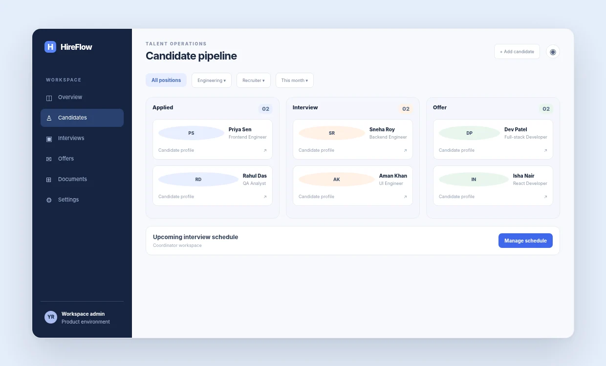
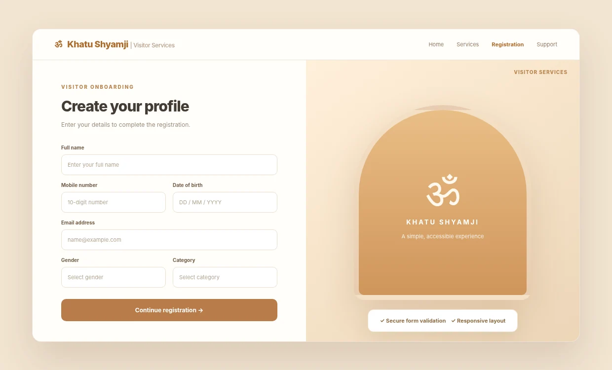
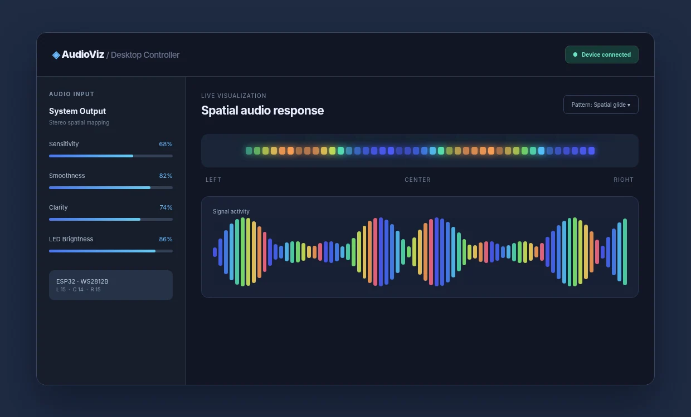
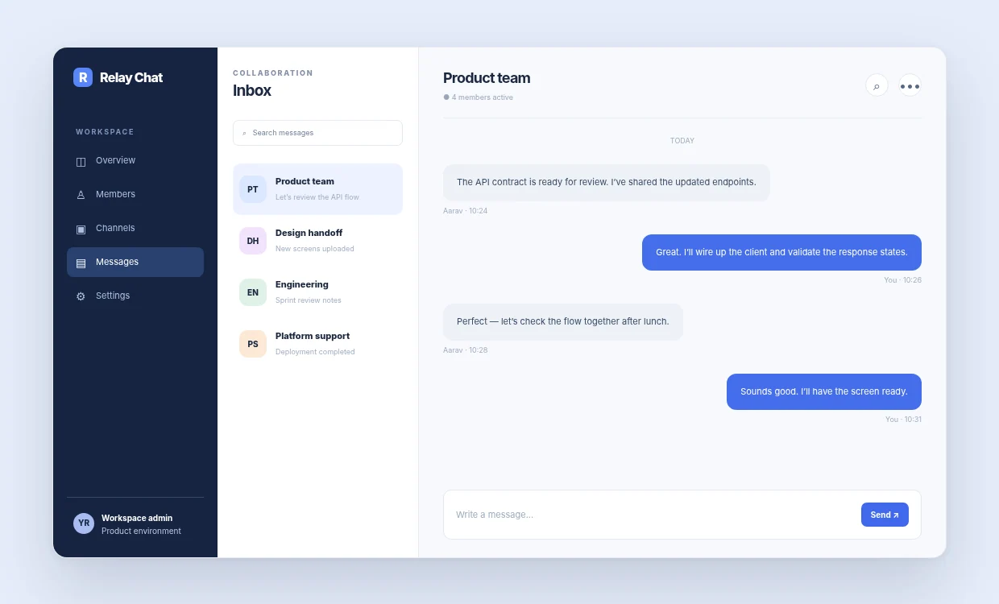

INTERFACE ILLUSTRATION
ENTERPRISE PLATFORM01 / 07
One GMS
Bringing employee records, attendance, leave workflows and admin operations into one connected experience.
ReactViteFastAPICloudinary
Full-stack developer turning complex workflows into intuitive interfaces, dependable APIs and production-ready web experiences.

Clear user journeys built for real people.
APIs, business logic and data workflows.
From requirements through delivery.
Real problems I've worked on across enterprise products, workflow platforms, backend systems and experiments.
Bringing employee records, attendance, leave workflows and admin operations into one connected experience.

INTERFACE ILLUSTRATIONFrontend workflows, inspection visibility and a reporting experience for welding operations.

INTERFACE ILLUSTRATIONMaking delivery status, resource allocation and project-level reporting easier to understand.

INTERFACE ILLUSTRATIONAPI-first hiring workflows covering authentication, interviews, offer letters and joining processes.

INTERFACE ILLUSTRATIONA responsive registration interface connected to Axpert data services and validation workflows.

INTERFACE ILLUSTRATIONExploring spatial audio mapping through a Windows desktop controller and ESP32 LED hardware.

INTERFACE ILLUSTRATIONReal-time messaging architecture with token authentication, private conversations and pagination.
Project images are custom interface illustrations using sample content, not screenshots of production or client systems. Original product screenshots can replace them.
Comfortable working from the interface users see to the services and data behind it.
Thoughtful, responsive interfaces with well-structured components, data handling and user flows.
RESTful endpoints, validation, authentication and reliable workflows in enterprise applications.
Connecting product interfaces to data platforms, services and practical reporting experiences.
Debugging, edge-case testing, code review, API integration and deployment collaboration.
Professional experience spanning product development, government workflows, backend engineering and AI code-quality evaluation.
Full career details on LinkedInGiantMind Solutions · Turing engagement
Evaluating and improving AI-generated code, creating robust implementations and writing edge-case driven tests across .NET, SQL and web application scenarios.
Orbitnext Tech · Agile Labs
Delivered modules for internal and government platforms across UI development, API integration, dashboards, data workflows and production issue resolution.
Bright People HR Solutions · Agile Labs
Developed frontend features, enhanced usability and resolved product issues using React, JavaScript, jQuery, SASS and Bootstrap.
Bright People HR Solutions · Agile Labs
Supported Oracle and PostgreSQL data workflows, queries and schema needs for application development.
I'm Yasar, a full-stack software developer who enjoys making complicated products feel straightforward. My work has taken me through workforce management, recruitment, government services, reporting platforms and real-time applications.
I'm equally comfortable refining a dashboard, tracing a tricky API integration, or shaping the database logic behind a feature. I care about clean implementation, practical problem-solving and details that make software easier to use.
Whether you're building a product, improving an existing platform, or looking for someone who can connect the dots across the stack — I'd love to hear about it.